Dungeon modular assets — native before/after and 3×
Sources are immutable approved native art. Boundary repairs and isolation changes are identified individually. This is a review candidate, not user-approved production art.
WallTiles / PortraitWallA
64×64, 10 opaque colors; binary alpha; source/export exact. Source pixels exact: False; source mask exact: True.
Native cyclic crop, 4px horizontal/2px vertical seam reconstruction; scoped blue-to-violet material map for battle/outer walls.
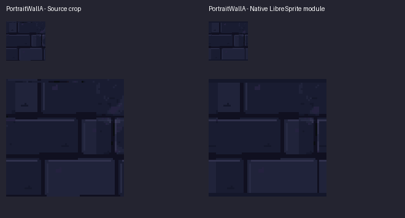
WallTiles / PortraitWallB
64×64, 10 opaque colors; binary alpha; source/export exact. Source pixels exact: False; source mask exact: True.
Native cyclic crop, 4px horizontal/2px vertical seam reconstruction; scoped blue-to-violet material map for battle/outer walls.
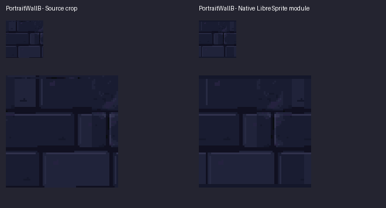
WallTiles / PortraitWallC
64×64, 10 opaque colors; binary alpha; source/export exact. Source pixels exact: False; source mask exact: True.
Native cyclic crop, 4px horizontal/2px vertical seam reconstruction; scoped blue-to-violet material map for battle/outer walls.
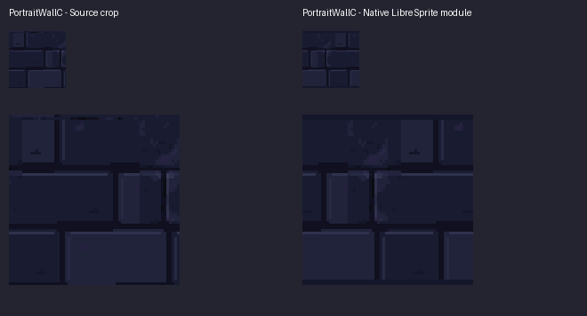
WallTiles / PortraitWallD
64×64, 10 opaque colors; binary alpha; source/export exact. Source pixels exact: False; source mask exact: True.
Native cyclic crop, 4px horizontal/2px vertical seam reconstruction; scoped blue-to-violet material map for battle/outer walls.
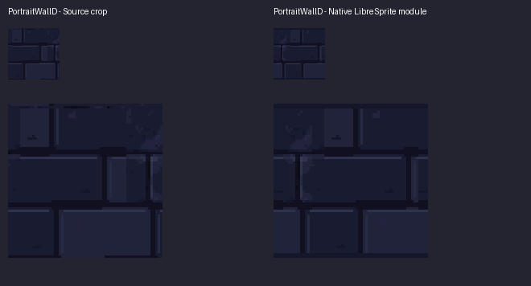
WallTiles / BattleWallA
64×64, 10 opaque colors; binary alpha; source/export exact. Source pixels exact: False; source mask exact: True.
Native cyclic crop, 4px horizontal/2px vertical seam reconstruction; scoped blue-to-violet material map for battle/outer walls.
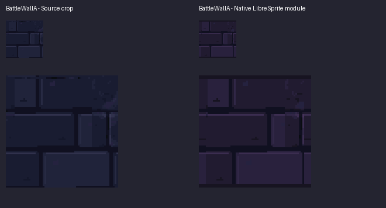
WallTiles / BattleWallB
64×64, 10 opaque colors; binary alpha; source/export exact. Source pixels exact: False; source mask exact: True.
Native cyclic crop, 4px horizontal/2px vertical seam reconstruction; scoped blue-to-violet material map for battle/outer walls.
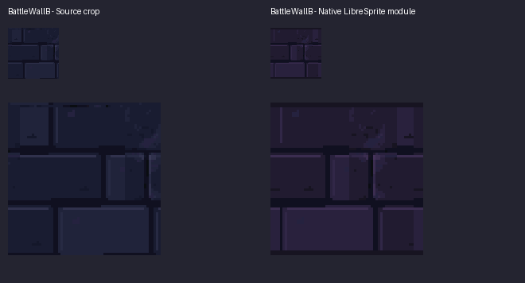
WallTiles / BattleWallC
64×64, 10 opaque colors; binary alpha; source/export exact. Source pixels exact: False; source mask exact: True.
Native cyclic crop, 4px horizontal/2px vertical seam reconstruction; scoped blue-to-violet material map for battle/outer walls.
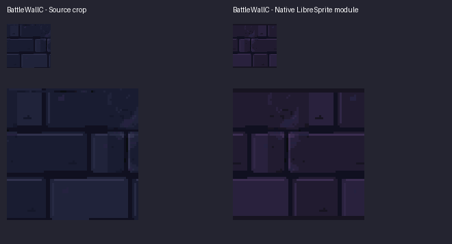
WallTiles / BattleWallD
64×64, 10 opaque colors; binary alpha; source/export exact. Source pixels exact: False; source mask exact: True.
Native cyclic crop, 4px horizontal/2px vertical seam reconstruction; scoped blue-to-violet material map for battle/outer walls.
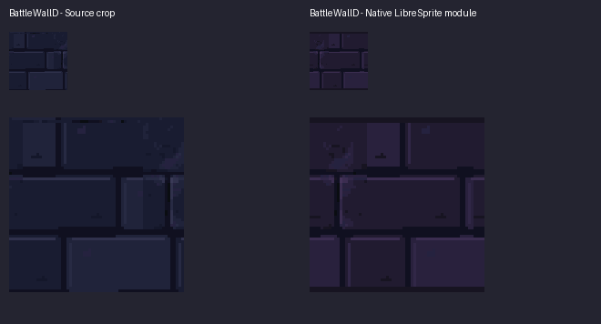
WallTiles / OuterWallA
64×64, 10 opaque colors; binary alpha; source/export exact. Source pixels exact: False; source mask exact: True.
Native cyclic crop, 4px horizontal/2px vertical seam reconstruction; scoped blue-to-violet material map for battle/outer walls.
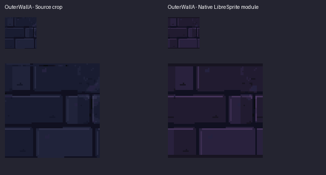
WallTiles / OuterWallB
64×64, 10 opaque colors; binary alpha; source/export exact. Source pixels exact: False; source mask exact: True.
Native cyclic crop, 4px horizontal/2px vertical seam reconstruction; scoped blue-to-violet material map for battle/outer walls.
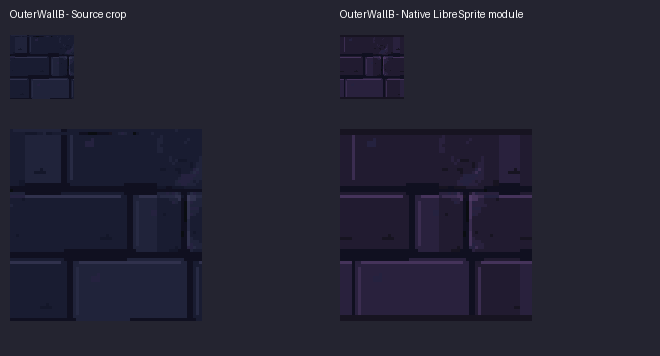
WallTiles / OuterWallC
64×64, 10 opaque colors; binary alpha; source/export exact. Source pixels exact: False; source mask exact: True.
Native cyclic crop, 4px horizontal/2px vertical seam reconstruction; scoped blue-to-violet material map for battle/outer walls.
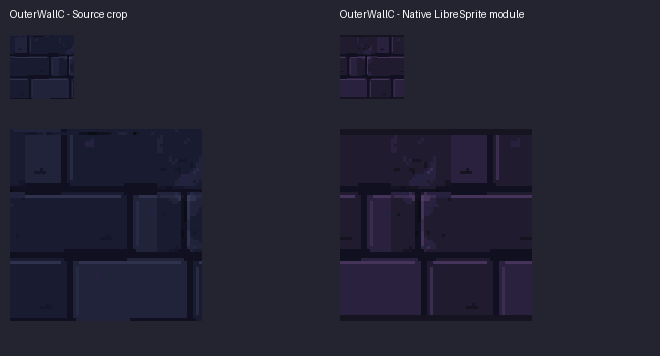
WallTiles / OuterWallD
64×64, 10 opaque colors; binary alpha; source/export exact. Source pixels exact: False; source mask exact: True.
Native cyclic crop, 4px horizontal/2px vertical seam reconstruction; scoped blue-to-violet material map for battle/outer walls.
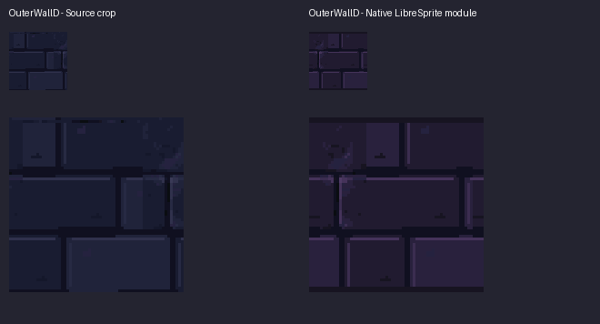
BoardFrames / BoardTL
24×24, 45 opaque colors; binary alpha; source/export exact. Source pixels exact: True; source mask exact: True.
Lossless native reuse; no pixel or silhouette change.
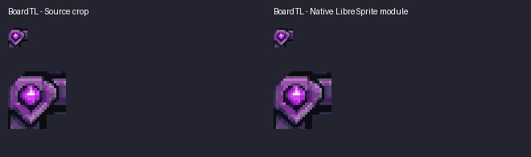
BoardFrames / BoardTR
24×24, 46 opaque colors; binary alpha; source/export exact. Source pixels exact: True; source mask exact: True.
Lossless native reuse; no pixel or silhouette change.
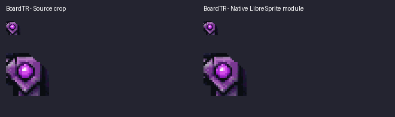
BoardFrames / BoardBL
24×24, 41 opaque colors; binary alpha; source/export exact. Source pixels exact: True; source mask exact: True.
Lossless native reuse; no pixel or silhouette change.
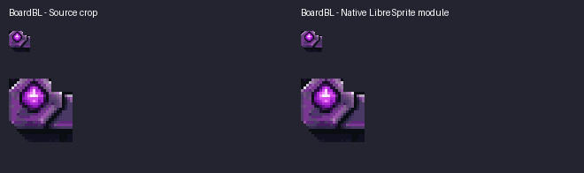
BoardFrames / BoardBR
24×24, 44 opaque colors; binary alpha; source/export exact. Source pixels exact: True; source mask exact: True.
Lossless native reuse; no pixel or silhouette change.
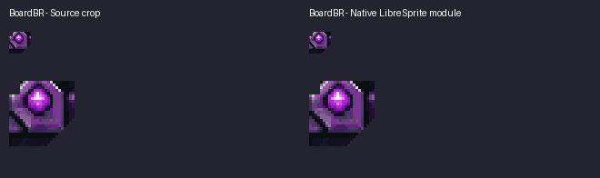
BoardFrames / BoardTopRail
64×18, 31 opaque colors; binary alpha; source/export exact. Source pixels exact: False; source mask exact: True.
Lossless native extraction plus 2px repeat-end repair; all remaining contour and ornament pixels protected.
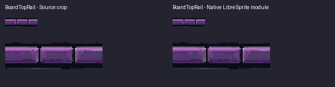
BoardFrames / BoardBottomRail
64×19, 27 opaque colors; binary alpha; source/export exact. Source pixels exact: False; source mask exact: True.
Lossless native extraction plus 2px repeat-end repair; all remaining contour and ornament pixels protected.
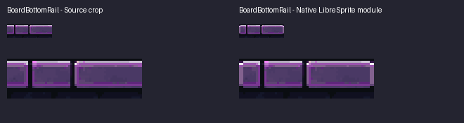
BoardFrames / BoardLeftRail
16×64, 33 opaque colors; binary alpha; source/export exact. Source pixels exact: False; source mask exact: True.
Lossless native extraction plus 2px repeat-end repair; all remaining contour and ornament pixels protected.
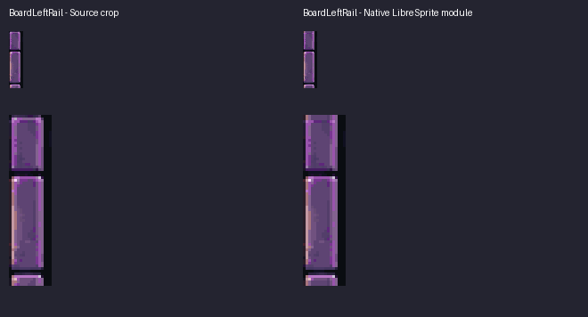
BoardFrames / BoardRightRail
20×64, 42 opaque colors; binary alpha; source/export exact. Source pixels exact: False; source mask exact: True.
Lossless native extraction plus 2px repeat-end repair; all remaining contour and ornament pixels protected.
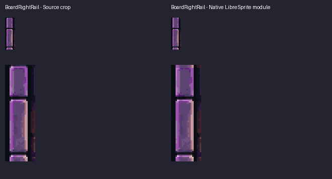
BoardFrames / BoardCenterFinial
20×14, 22 opaque colors; binary alpha; source/export exact. Source pixels exact: True; source mask exact: True.
Lossless native reuse; no pixel or silhouette change.
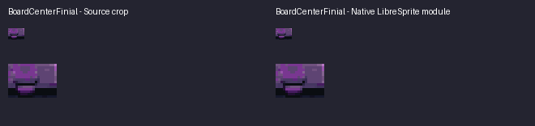
BackgroundLayers / EmptyCell0
46×46, 10 opaque colors; binary alpha; source/export exact. Source pixels exact: True; source mask exact: True.
Lossless native reuse; no pixel or silhouette change.
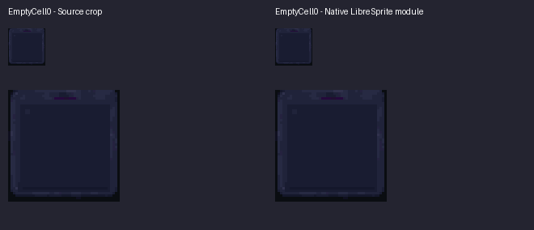
BackgroundLayers / EmptyCell1
45×46, 9 opaque colors; binary alpha; source/export exact. Source pixels exact: True; source mask exact: True.
Lossless native reuse; no pixel or silhouette change.
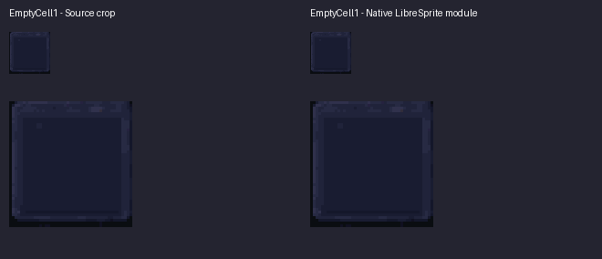
BackgroundLayers / EmptyCell2
46×46, 9 opaque colors; binary alpha; source/export exact. Source pixels exact: True; source mask exact: True.
Lossless native reuse; no pixel or silhouette change.
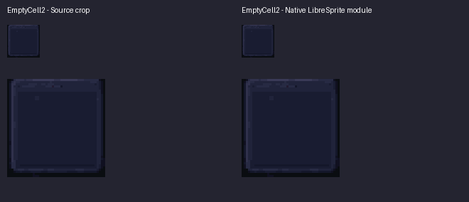
CharacterFrames / PortraitTL
18×18, 43 opaque colors; binary alpha; source/export exact. Source pixels exact: True; source mask exact: True.
Lossless native reuse; no pixel or silhouette change.
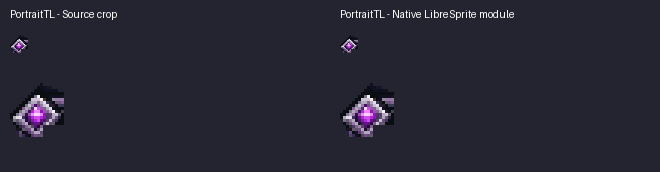
CharacterFrames / PortraitTR
18×18, 47 opaque colors; binary alpha; source/export exact. Source pixels exact: True; source mask exact: True.
Lossless native reuse; no pixel or silhouette change.
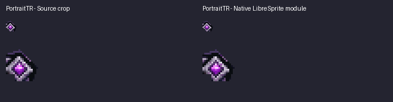
CharacterFrames / PortraitBL
18×18, 45 opaque colors; binary alpha; source/export exact. Source pixels exact: True; source mask exact: True.
Lossless native reuse; no pixel or silhouette change.
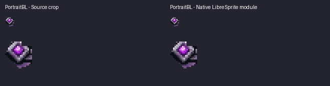
CharacterFrames / PortraitBR
18×18, 50 opaque colors; binary alpha; source/export exact. Source pixels exact: True; source mask exact: True.
Lossless native reuse; no pixel or silhouette change.
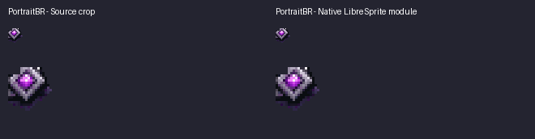
CharacterFrames / PortraitTop
16×13, 23 opaque colors; binary alpha; source/export exact. Source pixels exact: False; source mask exact: False.
Lossless native extraction plus 2px repeat-end repair; all remaining contour and ornament pixels protected.
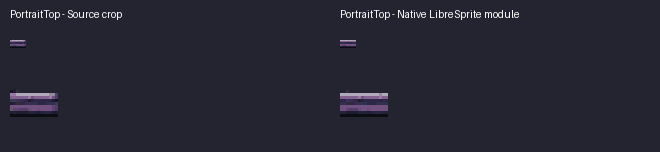
CharacterFrames / PortraitBottom
16×13, 11 opaque colors; binary alpha; source/export exact. Source pixels exact: False; source mask exact: False.
Lossless native extraction plus 2px repeat-end repair; all remaining contour and ornament pixels protected.
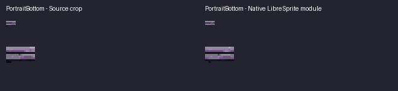
CharacterFrames / PortraitLeft
11×32, 18 opaque colors; binary alpha; source/export exact. Source pixels exact: False; source mask exact: True.
Lossless native extraction plus 2px repeat-end repair; all remaining contour and ornament pixels protected.
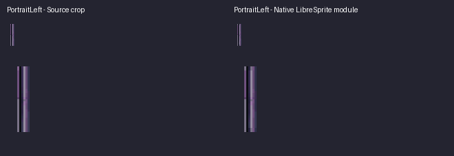
CharacterFrames / PortraitRight
13×32, 27 opaque colors; binary alpha; source/export exact. Source pixels exact: False; source mask exact: True.
Lossless native extraction plus 2px repeat-end repair; all remaining contour and ornament pixels protected.
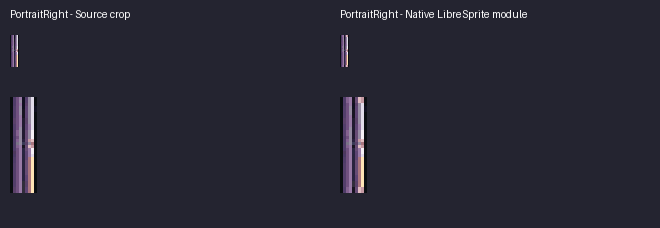
CharacterFrames / PortraitCollarTopA
12×13, 28 opaque colors; binary alpha; source/export exact. Source pixels exact: True; source mask exact: True.
Lossless native reuse; no pixel or silhouette change.
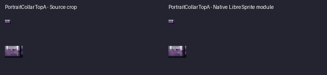
CharacterFrames / PortraitCollarTopB
12×13, 26 opaque colors; binary alpha; source/export exact. Source pixels exact: True; source mask exact: True.
Lossless native reuse; no pixel or silhouette change.
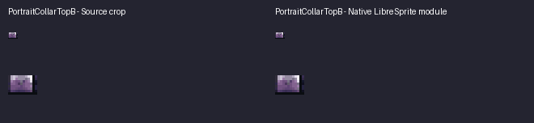
CharacterFrames / PortraitCollarBottomA
14×13, 17 opaque colors; binary alpha; source/export exact. Source pixels exact: True; source mask exact: True.
Lossless native reuse; no pixel or silhouette change.
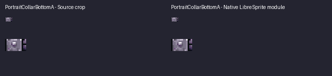
CharacterFrames / PortraitCollarBottomB
14×13, 17 opaque colors; binary alpha; source/export exact. Source pixels exact: True; source mask exact: True.
Lossless native reuse; no pixel or silhouette change.
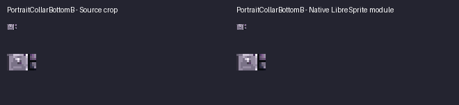
CharacterFrames / PortraitCollarLeftA
11×14, 22 opaque colors; binary alpha; source/export exact. Source pixels exact: True; source mask exact: True.
Lossless native reuse; no pixel or silhouette change.
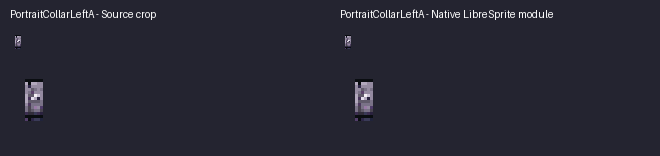
CharacterFrames / PortraitCollarLeftB
11×14, 17 opaque colors; binary alpha; source/export exact. Source pixels exact: True; source mask exact: True.
Lossless native reuse; no pixel or silhouette change.
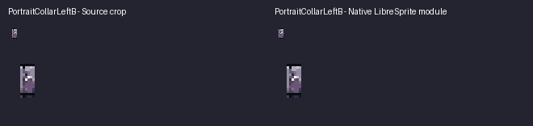
CharacterFrames / PortraitCollarRightA
13×14, 19 opaque colors; binary alpha; source/export exact. Source pixels exact: True; source mask exact: True.
Lossless native reuse; no pixel or silhouette change.
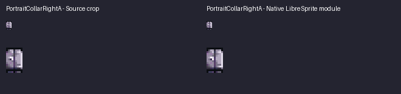
CharacterFrames / PortraitCollarRightB
13×14, 21 opaque colors; binary alpha; source/export exact. Source pixels exact: True; source mask exact: True.
Lossless native reuse; no pixel or silhouette change.
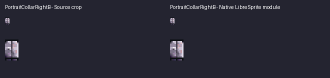
HudFrames / WaveTL
20×17, 48 opaque colors; binary alpha; source/export exact. Source pixels exact: True; source mask exact: True.
Lossless native reuse; no pixel or silhouette change.
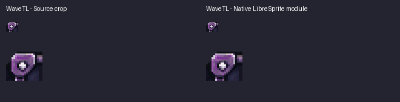
HudFrames / WaveTR
20×17, 35 opaque colors; binary alpha; source/export exact. Source pixels exact: True; source mask exact: True.
Lossless native reuse; no pixel or silhouette change.
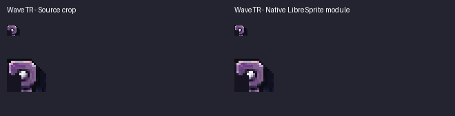
HudFrames / WaveBL
20×17, 41 opaque colors; binary alpha; source/export exact. Source pixels exact: True; source mask exact: True.
Lossless native reuse; no pixel or silhouette change.
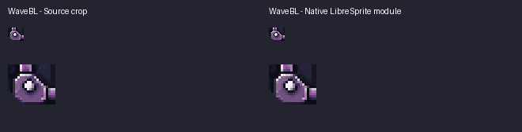
HudFrames / WaveBR
20×17, 35 opaque colors; binary alpha; source/export exact. Source pixels exact: True; source mask exact: True.
Lossless native reuse; no pixel or silhouette change.
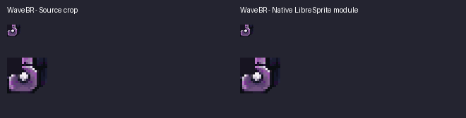
HudFrames / WaveTop
32×9, 38 opaque colors; binary alpha; source/export exact. Source pixels exact: False; source mask exact: True.
Lossless native extraction plus 2px repeat-end repair; all remaining contour and ornament pixels protected.
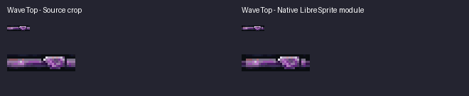
HudFrames / WaveBottom
32×9, 34 opaque colors; binary alpha; source/export exact. Source pixels exact: False; source mask exact: True.
Lossless native extraction plus 2px repeat-end repair; all remaining contour and ornament pixels protected.
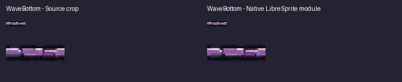
HudFrames / WaveLeft
10×4, 7 opaque colors; binary alpha; source/export exact. Source pixels exact: False; source mask exact: True.
Lossless native extraction plus 2px repeat-end repair; all remaining contour and ornament pixels protected.
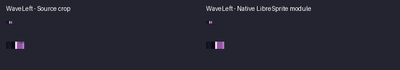
HudFrames / WaveRight
10×4, 6 opaque colors; binary alpha; source/export exact. Source pixels exact: False; source mask exact: True.
Lossless native extraction plus 2px repeat-end repair; all remaining contour and ornament pixels protected.
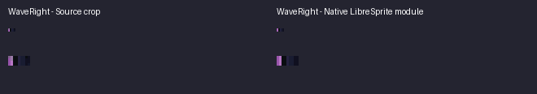
HudFrames / WaveSkull
27×12, 27 opaque colors; binary alpha; source/export exact. Source pixels exact: True; source mask exact: True.
Lossless native reuse; no pixel or silhouette change.
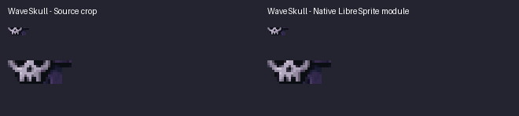
HudFrames / GuideTL
13×13, 29 opaque colors; binary alpha; source/export exact. Source pixels exact: True; source mask exact: True.
Lossless native reuse; no pixel or silhouette change.
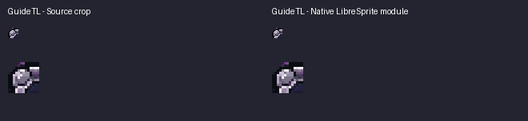
HudFrames / GuideTR
13×13, 22 opaque colors; binary alpha; source/export exact. Source pixels exact: True; source mask exact: True.
Lossless native reuse; no pixel or silhouette change.
HudFrames / GuideBL
13×13, 24 opaque colors; binary alpha; source/export exact. Source pixels exact: True; source mask exact: True.
Lossless native reuse; no pixel or silhouette change.
HudFrames / GuideBR
13×13, 25 opaque colors; binary alpha; source/export exact. Source pixels exact: True; source mask exact: True.
Lossless native reuse; no pixel or silhouette change.
HudFrames / GuideTop
32×8, 28 opaque colors; binary alpha; source/export exact. Source pixels exact: False; source mask exact: True.
Lossless native extraction plus 2px repeat-end repair; all remaining contour and ornament pixels protected.
HudFrames / GuideBottom
32×8, 28 opaque colors; binary alpha; source/export exact. Source pixels exact: False; source mask exact: True.
Lossless native extraction plus 2px repeat-end repair; all remaining contour and ornament pixels protected.
HudFrames / GuideLeft
9×13, 12 opaque colors; binary alpha; source/export exact. Source pixels exact: False; source mask exact: True.
Lossless native extraction plus 2px repeat-end repair; all remaining contour and ornament pixels protected.
HudFrames / GuideRight
9×13, 10 opaque colors; binary alpha; source/export exact. Source pixels exact: False; source mask exact: True.
Lossless native extraction plus 2px repeat-end repair; all remaining contour and ornament pixels protected.
HudFrames / SettingsTL
12×12, 24 opaque colors; binary alpha; source/export exact. Source pixels exact: True; source mask exact: True.
Lossless native reuse; no pixel or silhouette change.
HudFrames / SettingsTR
12×12, 24 opaque colors; binary alpha; source/export exact. Source pixels exact: True; source mask exact: True.
Lossless native reuse; no pixel or silhouette change.
HudFrames / SettingsBL
12×12, 34 opaque colors; binary alpha; source/export exact. Source pixels exact: True; source mask exact: True.
Lossless native reuse; no pixel or silhouette change.
HudFrames / SettingsBR
12×12, 27 opaque colors; binary alpha; source/export exact. Source pixels exact: True; source mask exact: True.
Lossless native reuse; no pixel or silhouette change.
HudFrames / SettingsTop
21×7, 17 opaque colors; binary alpha; source/export exact. Source pixels exact: False; source mask exact: True.
Lossless native extraction plus 2px repeat-end repair; all remaining contour and ornament pixels protected.
HudFrames / SettingsBottom
21×7, 16 opaque colors; binary alpha; source/export exact. Source pixels exact: False; source mask exact: True.
Lossless native extraction plus 2px repeat-end repair; all remaining contour and ornament pixels protected.
HudFrames / SettingsLeft
7×16, 12 opaque colors; binary alpha; source/export exact. Source pixels exact: False; source mask exact: True.
Lossless native extraction plus 2px repeat-end repair; all remaining contour and ornament pixels protected.
HudFrames / SettingsRight
7×16, 15 opaque colors; binary alpha; source/export exact. Source pixels exact: False; source mask exact: True.
Lossless native extraction plus 2px repeat-end repair; all remaining contour and ornament pixels protected.
HudFrames / SettingsGear
22×24, 32 opaque colors; binary alpha; source/export exact. Source pixels exact: True; source mask exact: True.
Lossless native reuse; no pixel or silhouette change.
HudFrames / AbilityTL
16×16, 35 opaque colors; binary alpha; source/export exact. Source pixels exact: True; source mask exact: True.
Lossless native reuse; no pixel or silhouette change.
HudFrames / AbilityTR
16×16, 27 opaque colors; binary alpha; source/export exact. Source pixels exact: True; source mask exact: True.
Lossless native reuse; no pixel or silhouette change.
HudFrames / AbilityBL
16×16, 31 opaque colors; binary alpha; source/export exact. Source pixels exact: True; source mask exact: True.
Lossless native reuse; no pixel or silhouette change.
HudFrames / AbilityBR
16×16, 27 opaque colors; binary alpha; source/export exact. Source pixels exact: True; source mask exact: True.
Lossless native reuse; no pixel or silhouette change.
HudFrames / AbilityTop
32×10, 28 opaque colors; binary alpha; source/export exact. Source pixels exact: False; source mask exact: True.
Lossless native extraction plus 2px repeat-end repair; all remaining contour and ornament pixels protected.
HudFrames / AbilityBottom
32×12, 17 opaque colors; binary alpha; source/export exact. Source pixels exact: False; source mask exact: True.
Lossless native extraction plus 2px repeat-end repair; all remaining contour and ornament pixels protected.
HudFrames / AbilityLeft
14×8, 10 opaque colors; binary alpha; source/export exact. Source pixels exact: False; source mask exact: True.
Lossless native extraction plus 2px repeat-end repair; all remaining contour and ornament pixels protected.
HudFrames / AbilityRight
14×8, 12 opaque colors; binary alpha; source/export exact. Source pixels exact: False; source mask exact: True.
Lossless native extraction plus 2px repeat-end repair; all remaining contour and ornament pixels protected.
HudFrames / AbilityLeftJewel
14×16, 33 opaque colors; binary alpha; source/export exact. Source pixels exact: True; source mask exact: True.
Lossless native reuse; no pixel or silhouette change.
HudFrames / AbilityRightJewel
14×16, 31 opaque colors; binary alpha; source/export exact. Source pixels exact: True; source mask exact: True.
Lossless native reuse; no pixel or silhouette change.
HudFrames / SupplyTL
20×20, 28 opaque colors; binary alpha; source/export exact. Source pixels exact: True; source mask exact: True.
Lossless native reuse; no pixel or silhouette change.
HudFrames / SupplyTR
20×20, 28 opaque colors; binary alpha; source/export exact. Source pixels exact: True; source mask exact: True.
Lossless native reuse; no pixel or silhouette change.
HudFrames / SupplyBL
20×20, 16 opaque colors; binary alpha; source/export exact. Source pixels exact: True; source mask exact: True.
Lossless native reuse; no pixel or silhouette change.
HudFrames / SupplyBR
20×20, 16 opaque colors; binary alpha; source/export exact. Source pixels exact: True; source mask exact: True.
Lossless native reuse; no pixel or silhouette change.
HudFrames / SupplyTop
30×9, 14 opaque colors; binary alpha; source/export exact. Source pixels exact: False; source mask exact: True.
Lossless native extraction plus 2px repeat-end repair; all remaining contour and ornament pixels protected.
HudFrames / SupplyBottom
30×16, 6 opaque colors; binary alpha; source/export exact. Source pixels exact: False; source mask exact: True.
Lossless native extraction plus 2px repeat-end repair; all remaining contour and ornament pixels protected.
HudFrames / SupplyLeft
10×23, 14 opaque colors; binary alpha; source/export exact. Source pixels exact: False; source mask exact: True.
Lossless native extraction plus 2px repeat-end repair; all remaining contour and ornament pixels protected.
HudFrames / SupplyRight
10×23, 22 opaque colors; binary alpha; source/export exact. Source pixels exact: False; source mask exact: True.
Lossless native extraction plus 2px repeat-end repair; all remaining contour and ornament pixels protected.
HudFrames / EnergyStart
13×24, 21 opaque colors; binary alpha; source/export exact. Source pixels exact: True; source mask exact: True.
Lossless native reuse; no pixel or silhouette change.
HudFrames / EnergyEnd
15×24, 26 opaque colors; binary alpha; source/export exact. Source pixels exact: True; source mask exact: True.
Lossless native reuse; no pixel or silhouette change.
HudFrames / EnergyTopRail
64×6, 14 opaque colors; binary alpha; source/export exact. Source pixels exact: False; source mask exact: True.
Lossless native extraction plus 2px repeat-end repair; all remaining contour and ornament pixels protected.
HudFrames / EnergyBottomRail
64×6, 7 opaque colors; binary alpha; source/export exact. Source pixels exact: False; source mask exact: True.
Lossless native extraction plus 2px repeat-end repair; all remaining contour and ornament pixels protected.
CharacterFrames / PlayerHealthStart
16×24, 9 opaque colors; binary alpha; source/export exact. Source pixels exact: True; source mask exact: True.
Lossless native reuse; no pixel or silhouette change.
CharacterFrames / PlayerHealthMiddle
1×24, 4 opaque colors; binary alpha; source/export exact. Source pixels exact: True; source mask exact: True.
Lossless native reuse; no pixel or silhouette change.
CharacterFrames / PlayerHealthEnd
16×24, 9 opaque colors; binary alpha; source/export exact. Source pixels exact: True; source mask exact: True.
Lossless native reuse; no pixel or silhouette change.
BackgroundLayers / HudDark
8×8, 1 opaque colors; binary alpha; source/export exact. Source pixels exact: False; source mask exact: False.
Dedicated repeatable recess fill; no pictorial source resampling.
BackgroundLayers / AbilityDark
8×8, 1 opaque colors; binary alpha; source/export exact. Source pixels exact: False; source mask exact: False.
Dedicated repeatable recess fill; no pictorial source resampling.
BackgroundLayers / SilverInset
8×8, 1 opaque colors; binary alpha; source/export exact. Source pixels exact: False; source mask exact: False.
Dedicated repeatable recess fill; no pictorial source resampling.
Props / Gateway
115×121, 51 opaque colors; binary alpha; source/export exact. Source pixels exact: True; source mask exact: True.
Lossless native reuse; no pixel or silhouette change.
Props / LeftTorch
25×65, 35 opaque colors; binary alpha; source/export exact. Source pixels exact: True; source mask exact: True.
Lossless native reuse; no pixel or silhouette change.
Props / RightTorch
26×67, 42 opaque colors; binary alpha; source/export exact. Source pixels exact: True; source mask exact: True.
Lossless native reuse; no pixel or silhouette change.
Props / RearBarrels
35×46, 47 opaque colors; binary alpha; source/export exact. Source pixels exact: True; source mask exact: True.
Lossless native reuse; no pixel or silhouette change.
Props / FrontBarrel
38×46, 53 opaque colors; binary alpha; source/export exact. Source pixels exact: True; source mask exact: True.
Lossless native reuse; no pixel or silhouette change.
Props / LeftBones
24×40, 45 opaque colors; binary alpha; source/export exact. Source pixels exact: True; source mask exact: True.
Lossless native reuse; no pixel or silhouette change.
Props / RightBones
34×38, 51 opaque colors; binary alpha; source/export exact. Source pixels exact: True; source mask exact: True.
Lossless native reuse; no pixel or silhouette change.
Props / RearBones
28×34, 39 opaque colors; binary alpha; source/export exact. Source pixels exact: True; source mask exact: True.
Lossless native reuse; no pixel or silhouette change.
Props / PortraitBanner
49×65, 48 opaque colors; binary alpha; source/export exact. Source pixels exact: True; source mask exact: True.
Lossless native reuse; no pixel or silhouette change.
Props / LeftHangingBanner
25×63, 44 opaque colors; binary alpha; source/export exact. Source pixels exact: False; source mask exact: False.
Native isolation with an explicit silhouette selection; retained pixels unchanged.
Props / RightHangingBanner
26×61, 43 opaque colors; binary alpha; source/export exact. Source pixels exact: False; source mask exact: False.
Native isolation with an explicit silhouette selection; retained pixels unchanged.
Props / LeftHighChain
34×103, 54 opaque colors; binary alpha; source/export exact. Source pixels exact: False; source mask exact: False.
Native isolation with an explicit silhouette selection; retained pixels unchanged.
Props / RightHighChain
28×83, 45 opaque colors; binary alpha; source/export exact. Source pixels exact: False; source mask exact: False.
Native isolation with an explicit silhouette selection; retained pixels unchanged.
Props / FarRightChain
21×180, 55 opaque colors; binary alpha; source/export exact. Source pixels exact: False; source mask exact: False.
Native chain isolation; missing Settings-occluded middle links reconstructed from the approved side-chain strip. Existing visible links outside the repair rectangle unchanged.
Props / LeftSideChain
16×111, 60 opaque colors; binary alpha; source/export exact. Source pixels exact: True; source mask exact: True.
Lossless native extraction.
Props / RightSideChain
12×111, 60 opaque colors; binary alpha; source/export exact. Source pixels exact: True; source mask exact: True.
Lossless native extraction.
Props / LeftSideTorch
37×83, 58 opaque colors; binary alpha; source/export exact. Source pixels exact: False; source mask exact: False.
Native isolation with an explicit silhouette selection; retained pixels unchanged.
Props / RightSideTorch
33×83, 59 opaque colors; binary alpha; source/export exact. Source pixels exact: False; source mask exact: False.
Native isolation with an explicit silhouette selection; retained pixels unchanged.
Props / LeftSideBanner
30×96, 48 opaque colors; binary alpha; source/export exact. Source pixels exact: False; source mask exact: False.
Native isolation with an explicit silhouette selection; retained pixels unchanged.
Props / RightSideBanner
29×96, 50 opaque colors; binary alpha; source/export exact. Source pixels exact: False; source mask exact: False.
Native isolation with an explicit silhouette selection; retained pixels unchanged.
Props / LeftSkullPillar
37×114, 42 opaque colors; binary alpha; source/export exact. Source pixels exact: True; source mask exact: True.
Lossless native extraction.
Props / RightSkullPillar
33×114, 40 opaque colors; binary alpha; source/export exact. Source pixels exact: True; source mask exact: True.
Lossless native extraction.
Props / LeftBottomButtress
67×135, 36 opaque colors; binary alpha; source/export exact. Source pixels exact: False; source mask exact: False.
Native isolation with an explicit silhouette selection; retained pixels unchanged.
Props / RightBottomButtress
63×135, 35 opaque colors; binary alpha; source/export exact. Source pixels exact: False; source mask exact: False.
Native isolation with an explicit silhouette selection; retained pixels unchanged.
Props / LeftTopPillar
10×180, 32 opaque colors; binary alpha; source/export exact. Source pixels exact: True; source mask exact: True.
Lossless native extraction.
Props / CenterTopPillar
38×28, 30 opaque colors; binary alpha; source/export exact. Source pixels exact: True; source mask exact: True.
Lossless native extraction.
Props / RightTopPillar
23×180, 57 opaque colors; binary alpha; source/export exact. Source pixels exact: False; source mask exact: True.
Native pillar with only the Guide-occluded flat patch reconstructed from its intact stone band; original rectangular silhouette and visible pixels elsewhere unchanged.
Props / FarRightPillar
12×180, 28 opaque colors; binary alpha; source/export exact. Source pixels exact: True; source mask exact: True.
Lossless native extraction.
Props / FoundationStart
24×23, 30 opaque colors; binary alpha; source/export exact. Source pixels exact: True; source mask exact: True.
Lossless native reuse; no pixel or silhouette change.
Props / FoundationTopRail
64×23, 35 opaque colors; binary alpha; source/export exact. Source pixels exact: False; source mask exact: True.
Lossless native extraction plus 2px repeat-end repair; all remaining contour and ornament pixels protected.
Props / FoundationEnd
30×23, 30 opaque colors; binary alpha; source/export exact. Source pixels exact: True; source mask exact: True.
Lossless native reuse; no pixel or silhouette change.